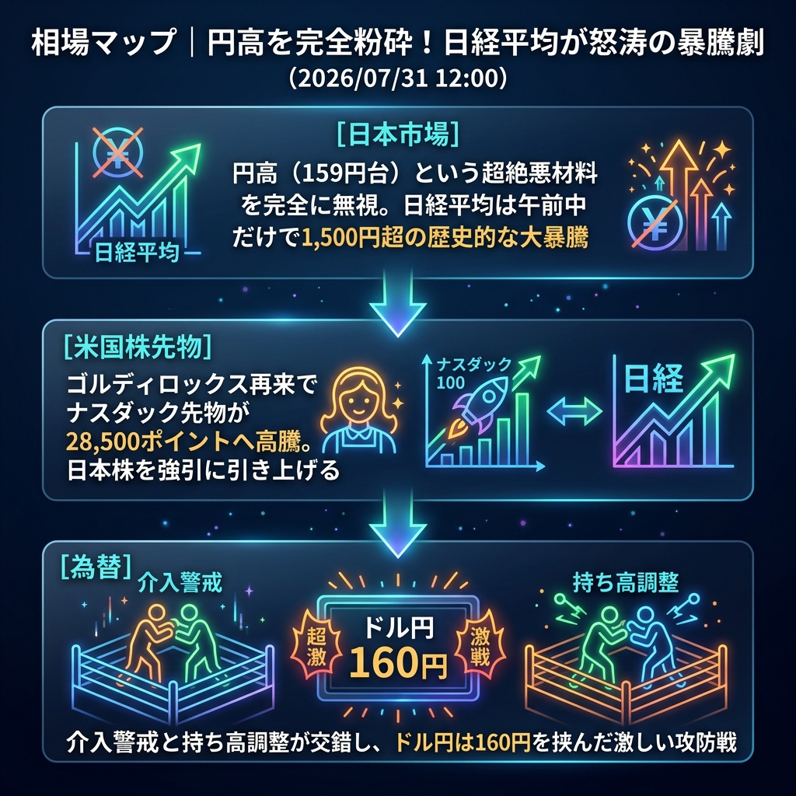

円高という強烈な悪材料を完全にねじ伏せました。午前中の東京市場は、米国ハイテク株の暴騰に引っ張られる形で、空売りの強烈な買い戻し（ショートスクイーズ）が炸裂。日経平均は前日比で1,500円を超える歴史的な大暴騰を演じています。
「円高を無視した日本株の強烈な買い戻し」と「ゴルディロックス相場の波及」。
寄り付き直後は為替の円高（一時159円台）を嫌気して重い動きが見られましたが、すぐに「米国株高」のテーマが相場を支配。海外勢とみられる猛烈な先物買いが入り、日経平均は信じられないほどの角度で上昇を続けています。ドル円は160円を挟んだ攻防となっており、介入警戒感が依然としてくすぶっています。